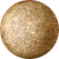
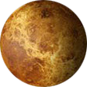
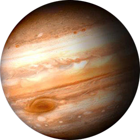
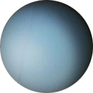
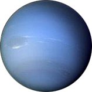

Mercury

Diameter: 3,031 miles
Distance from Sun: 67,000,000 miles
Temperature: 800 °F
Orbital Period: 88 days
Number of Moons: 0
Venus

Diameter: 7,521 miles
Distance from Sun: 67,000,000 miles
Temperature: 896 °F
Orbital Period: 224 days
Number of Moons: 0
Earth
Diameter: 7,926 miles
Distance from Sun: 92,960,000 miles
Temperature: 57 °F
Orbital Period: 365.25 days
Number of Moons: 1
Mars
Diameter: 4,222 miles
Distance from Sun: 141,700,000 miles
Temperature: -81 °F
Orbital Period: 687 days
Number of Moons: 2
Jupiter

Diameter: 88,846 miles
Distance from Sun: 483,500,000 miles
Temperature: -202 °F
Orbital Period: 11.86 years
Number of Moons: 79
Saturn

Diameter: 74,900 miles
Distance from Sun: 888,750,000 miles
Temperature: -202 °F
Orbital Period: 29 years
Number of Moons: 62
Uranus

Diameter: 31,763 miles
Distance from Sun: 1,783,744,300 miles
Temperature: -328 °F
Orbital Period: 84 years
Number of Moons: 27
Neptune

Diameter: 30,779 miles
Distance from Sun: 2,797,770,000 miles
Temperature: -328 °F
Orbital Period: 164.8 years
Number of Moons: 14